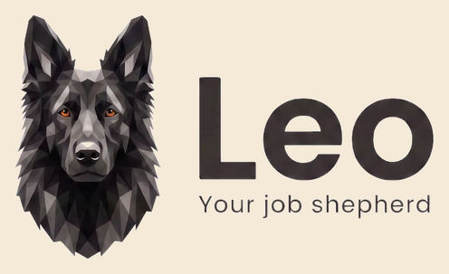
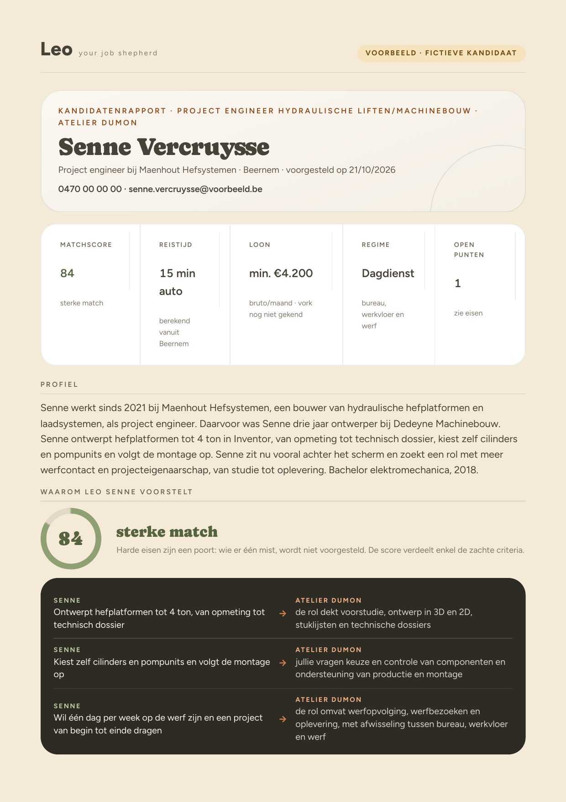
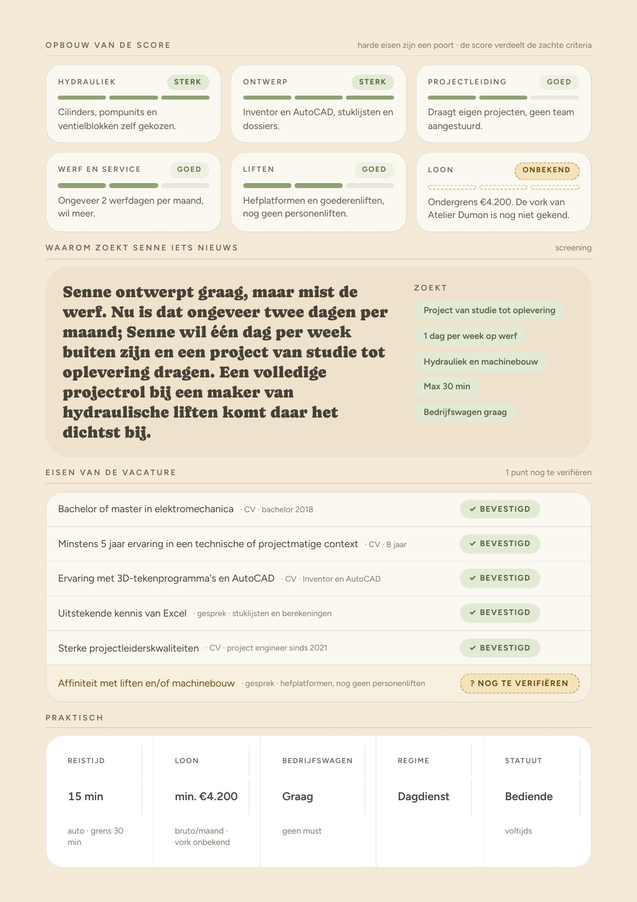
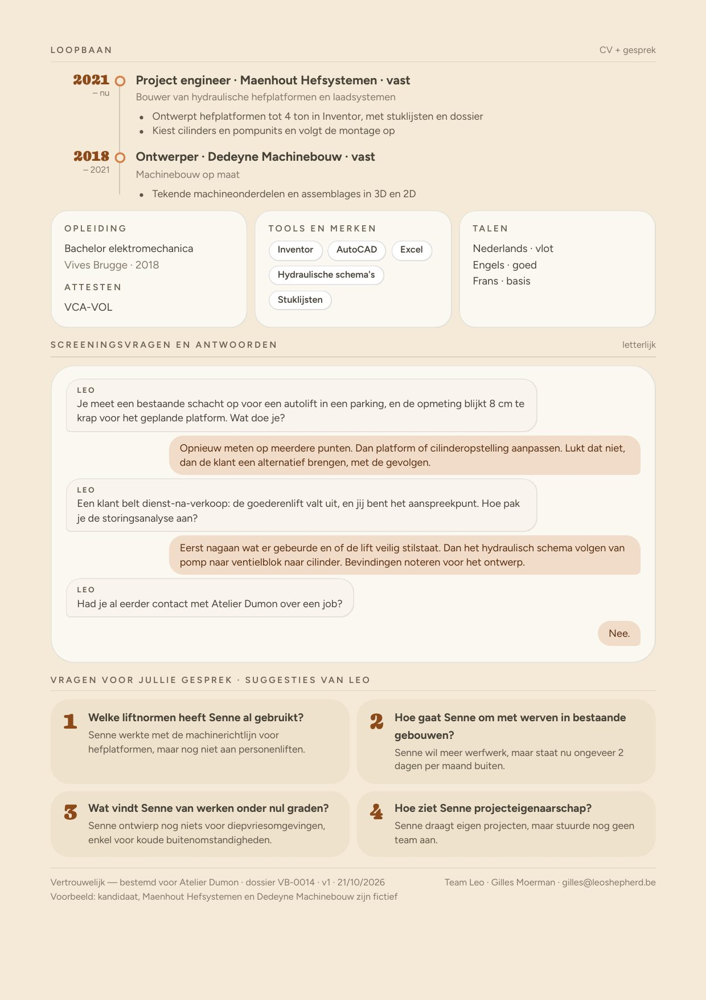

Voor Atelier Dumon · Project Engineer Hydraulische Liften/Machinebouw
Een simulatie van een echt gesprek: een kandidaat praat met Leo, onze digitale recruiter, over jullie vacature in Brugge. Daarna het rapport dat jullie zouden ontvangen.
Het gesprek
Let op hoe Leo een vaag "ik zie de werf amper" meetbaar maakt (nu twee dagen per maand, gewenst één dag per week), dat hij de rol kent van voorstudie tot oplevering en dienst-na-verkoop, en dat hij vraagt naar installaties onder nul graden voor de diepvriesindustrie. Duur: ongeveer 2 minuten.
Wat jullie ontvangen
Geen cv in bijlage, maar een rapport van drie pagina's:


